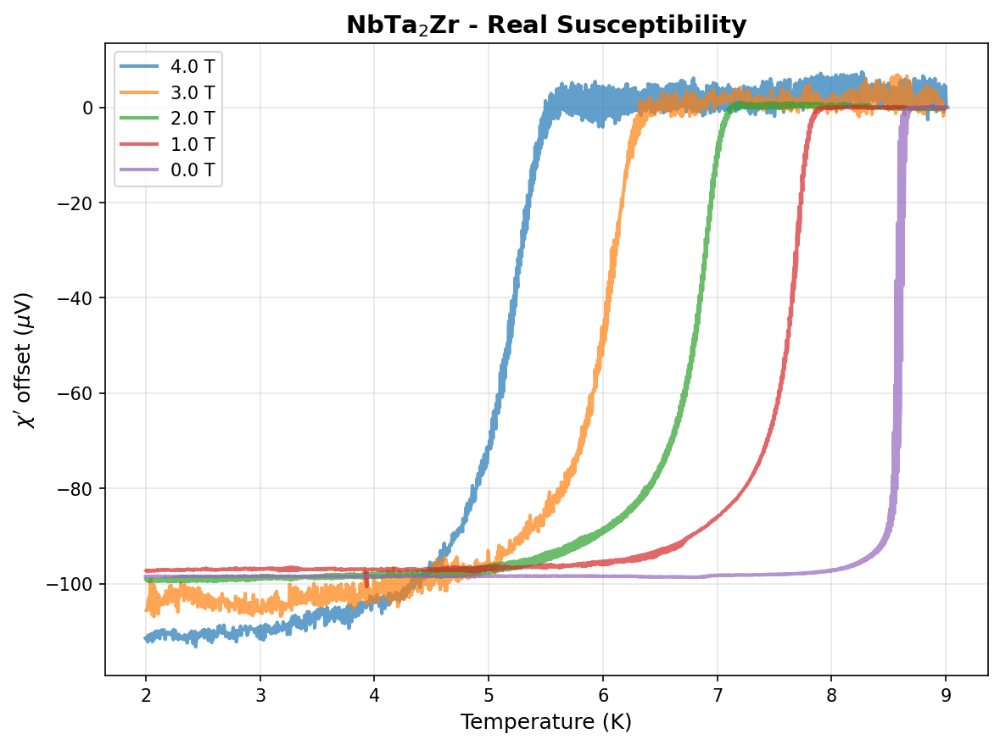
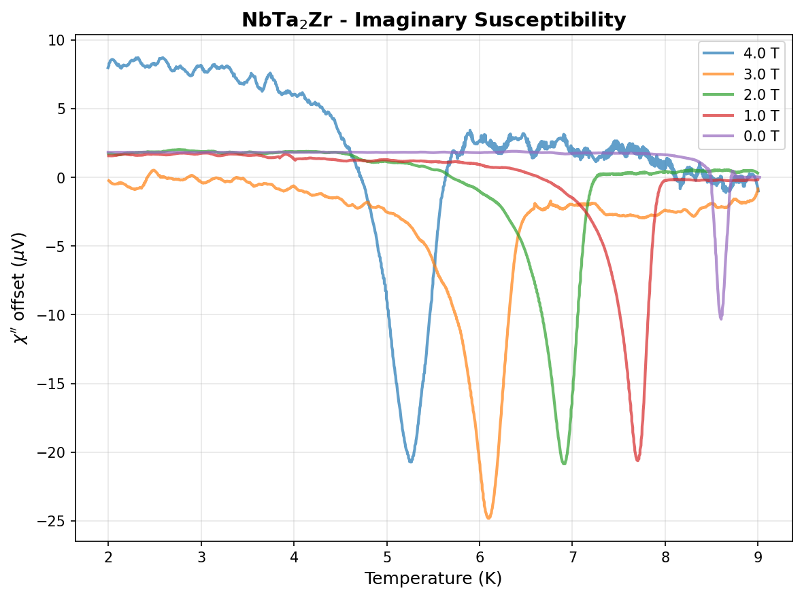
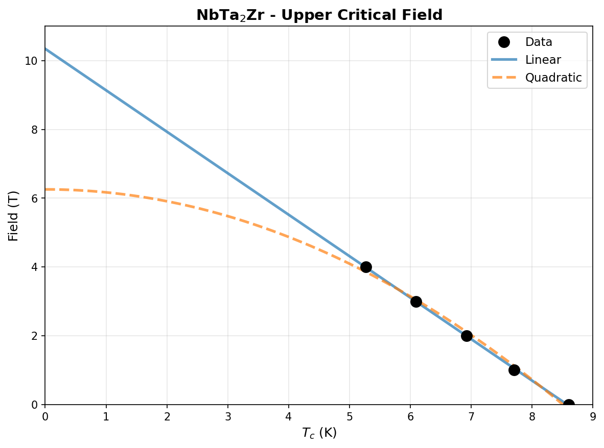

| Element | Expected (mol frac) | Measured (mol frac) | Δ (mol frac) | Δ (%) |
|---|---|---|---|---|
| Nb | 0.2500 | 0.2492 | -0.0008 | -0.08% |
| Ta | 0.5000 | 0.5010 | +0.0010 | +0.10% |
| Zr | 0.2500 | 0.2498 | -0.0002 | -0.02% |
362 entries in the Nb-Ta-Zr element system (10 on hull, 30 ICSD-tagged). Stability in meV/atom. Sorted most stable first.
| Composition | Stability (meV/atom) | ΔE (meV/atom) | ICSD | Space | Entry | CIF |
|---|---|---|---|---|---|---|
Nb1Ta1 |
-1 | -5.4 | Nb-Ta | 2162798 | CIF | |
Nb1Ta2 |
-1 | -4.8 | Nb-Ta | 2162766 | CIF | |
Nb3Ta1 |
+0 | -3.5 | Nb-Ta | 2086148 | CIF | |
Nb3Ta1 |
+0 | -3.5 | Nb-Ta | 2121467 | CIF | |
Nb1Ta7 |
+0 | -1.9 | Nb-Ta | 2162789 | CIF | |
Nb1 |
+0 | 0.0 | Nb | 1521870 | CIF | |
Nb1 |
+0 | 0.0 | Nb | 1215170 | CIF | |
Nb1 |
+0 | 0.0 | Nb | 1521875 | CIF | |
Ta1 |
+0 | 0.0 | Ta | 1215197 | CIF | |
Zr1 |
+0 | -0.2 | Zr | 1791927 | CIF | |
Nb1 |
+0 | 0.0 | ✓ | Nb | 685533 | CIF |
Ta1 |
+0 | 0.1 | Ta | 2162725 | CIF | |
Ta1 |
+0 | 0.1 | Ta | 2162668 | CIF | |
Ta1 |
+0 | 0.1 | Ta | 1522225 | CIF | |
Nb1 |
+0 | 0.1 | Nb | 2162724 | CIF | |
Nb1 |
+0 | 0.1 | Nb | 2162619 | CIF | |
Nb2Ta1 |
+0 | -4.0 | Nb-Ta | 2162764 | CIF | |
Nb1Ta2 |
+0 | -4.6 | Nb-Ta | 1450365 | CIF | |
Nb8Ta1 |
+0 | -1.4 | Nb-Ta | 1990445 | CIF | |
Zr1 |
+0 | 0.0 | ✓ | Zr | 67408 | CIF |
Zr1 |
+0 | 0.1 | Zr | 758445 | CIF | |
Zr1 |
+0 | 0.1 | Zr | 758455 | CIF | |
Ta1 |
+0 | 0.3 | ✓ | Ta | 676531 | CIF |
Zr1 |
+0 | 0.2 | ✓ | Zr | 8196 | CIF |
Zr1 |
+0 | 0.2 | Zr | 1215390 | CIF | |
Zr1 |
+0 | 0.2 | Zr | 758475 | CIF | |
Zr1 |
+0 | 0.2 | Zr | 758462 | CIF | |
Zr1 |
+0 | 0.2 | Zr | 758464 | CIF | |
Zr1 |
+0 | 0.3 | Zr | 758463 | CIF | |
Zr1 |
+0 | 0.3 | Zr | 758466 | CIF | |
Zr1 |
+0 | 0.3 | Zr | 758474 | CIF | |
Zr1 |
+0 | 0.3 | Zr | 758457 | CIF | |
Zr1 |
+1 | 0.3 | ✓ | Zr | 117515 | CIF |
Zr1 |
+1 | 0.3 | ✓ | Zr | 2030147 | CIF |
Nb3Ta2 |
+1 | -4.1 | Nb-Ta | 2162752 | CIF | |
Zr1 |
+1 | 0.4 | Zr | 758448 | CIF | |
Zr1 |
+1 | 0.4 | Zr | 758450 | CIF | |
Zr1 |
+1 | 0.4 | Zr | 758465 | CIF | |
Zr1 |
+1 | 0.4 | Zr | 758449 | CIF | |
Zr1 |
+1 | 0.4 | Zr | 758470 | CIF | |
Zr1 |
+1 | 0.4 | Zr | 758456 | CIF | |
Zr1 |
+1 | 0.4 | Zr | 758453 | CIF | |
Zr1 |
+1 | 0.5 | Zr | 758472 | CIF | |
Zr1 |
+1 | 0.5 | Zr | 758461 | CIF | |
Zr1 |
+1 | 0.5 | Zr | 758471 | CIF | |
Zr1 |
+1 | 0.5 | Zr | 758458 | CIF | |
Zr1 |
+1 | 0.5 | Zr | 758451 | CIF | |
Zr1 |
+1 | 0.5 | Zr | 758454 | CIF | |
Zr1 |
+1 | 0.5 | Zr | 758460 | CIF | |
Zr1 |
+1 | 0.5 | Zr | 758473 | CIF | |
Zr1 |
+1 | 0.5 | Zr | 758452 | CIF | |
Zr1 |
+1 | 0.5 | Zr | 758446 | CIF | |
Nb1Ta1 |
+1 | -4.7 | Nb-Ta | 2080473 | CIF | |
Zr1 |
+1 | 0.5 | Zr | 758444 | CIF | |
Zr1 |
+1 | 0.6 | Zr | 758459 | CIF | |
Zr1 |
+1 | 0.6 | Zr | 758447 | CIF | |
Nb2Ta1 |
+1 | -3.3 | Nb-Ta | 2162750 | CIF | |
Zr1 |
+1 | 0.6 | Zr | 1926822 | CIF | |
Nb1Ta3 |
+1 | -2.8 | Nb-Ta | 2086012 | CIF | |
Nb1Ta1 |
+1 | -4.4 | Nb-Ta | 2162790 | CIF | |
Zr1 |
+1 | 1.0 | ✓ | Zr | 2031515 | CIF |
Nb2Ta3 |
+1 | -3.8 | Nb-Ta | 2162747 | CIF | |
Nb3Ta1 |
+1 | -2.2 | Nb-Ta | 2080606 | CIF | |
Zr1 |
+1 | 1.3 | Zr | 1801137 | CIF | |
Nb1Ta1 |
+2 | -3.8 | Nb-Ta | 2085876 | CIF | |
Nb1Ta1 |
+2 | -3.8 | Nb-Ta | 2121545 | CIF | |
Nb3Ta1 |
+2 | -1.8 | Nb-Ta | 2082335 | CIF | |
Nb3Ta1 |
+2 | -1.8 | Nb-Ta | 2082460 | CIF | |
Nb1Ta3 |
+2 | -1.9 | Nb-Ta | 2082310 | CIF | |
Nb1Ta3 |
+2 | -1.9 | Nb-Ta | 2082485 | CIF | |
Nb1Ta2 |
+2 | -2.8 | Nb-Ta | 2162755 | CIF | |
Nb1Ta1 |
+2 | -3.1 | Nb-Ta | 2082160 | CIF | |
Nb1Ta1 |
+2 | -3.1 | Nb-Ta | 2082185 | CIF | |
Ta1 |
+2 | 2.3 | ✓ | Ta | 670903 | CIF |
Nb3Ta1 |
+2 | -1.1 | Nb-Ta | 2162776 | CIF | |
Nb1Ta2 |
+3 | -2.2 | Nb-Ta | 1973635 | CIF | |
Ta1 |
+3 | 2.6 | ✓ | Ta | 16591 | CIF |
Ta1 |
+3 | 2.7 | ✓ | Ta | 9754 | CIF |
Ta1 |
+3 | 2.7 | Ta | 1515748 | CIF | |
Ta1 |
+3 | 2.7 | ✓ | Ta | 9755 | CIF |
Nb1Ta4 |
+3 | -0.2 | Nb-Ta | 2131589 | CIF | |
Nb1Ta1 |
+3 | -2.5 | Nb-Ta | 2162778 | CIF | |
Nb1Ta1 |
+3 | -2.5 | Nb-Ta | 2162813 | CIF | |
Nb3Ta2 |
+3 | -1.7 | Nb-Ta | 2162751 | CIF | |
Nb2Ta1 |
+3 | -1.1 | Nb-Ta | 2162814 | CIF | |
Zr1 |
+3 | 2.9 | Zr | 1215301 | CIF | |
Nb1Ta1 |
+3 | -2.2 | Nb-Ta | 2084819 | CIF | |
Nb1Ta1 |
+3 | -2.2 | Nb-Ta | 2121117 | CIF | |
Nb1Ta2 |
+3 | -1.6 | Nb-Ta | 2162728 | CIF | |
Nb1Ta3 |
+3 | -0.3 | Nb-Ta | 2162783 | CIF | |
Nb2Ta3 |
+4 | -1.3 | Nb-Ta | 2162753 | CIF | |
Nb5Ta4 |
+4 | -1.2 | Nb-Ta | 1975086 | CIF | |
Nb3Ta1 |
+5 | 1.1 | Nb-Ta | 314195 | CIF | |
Nb3Ta1 |
+5 | 1.1 | Nb-Ta | 2162729 | CIF | |
Nb3Ta1 |
+5 | 1.3 | ✓ | Nb-Ta | 2036476 | CIF |
Nb1Ta3 |
+6 | 2.3 | Nb-Ta | 2162735 | CIF | |
Nb1Ta3 |
+6 | 2.4 | ✓ | Nb-Ta | 2036478 | CIF |
Nb1Ta3 |
+6 | 2.5 | Nb-Ta | 308969 | CIF | |
Nb1Ta1 |
+6 | 0.7 | Nb-Ta | 1338619 | CIF | |
Nb1Ta1 |
+6 | 0.8 | Nb-Ta | 1338896 | CIF | |
Nb1Ta1 |
+6 | 0.9 | Nb-Ta | 2162797 | CIF | |
Nb1Ta1 |
+6 | 0.9 | Nb-Ta | 1339378 | CIF | |
Nb1Ta1 |
+6 | 0.9 | Nb-Ta | 307535 | CIF | |
Nb1Ta1 |
+6 | 0.9 | Nb-Ta | 1522332 | CIF | |
Nb1Ta1 |
+6 | 0.9 | ✓ | Nb-Ta | 2036475 | CIF |
Nb1Ta1 |
+7 | 1.3 | Nb-Ta | 2162775 | CIF | |
Nb1Ta1 |
+7 | 1.9 | Nb-Ta | 2162799 | CIF | |
Nb1Ta3 |
+7 | 3.7 | Nb-Ta | 2121028 | CIF | |
Nb1Ta3 |
+8 | 4.3 | Nb-Ta | 2080742 | CIF | |
Nb1Ta1 |
+9 | 3.7 | Nb-Ta | 2162731 | CIF | |
Nb1Ta1 |
+9 | 3.7 | ✓ | Nb-Ta | 2036477 | CIF |
Nb1Ta1 |
+9 | 3.7 | Nb-Ta | 2082609 | CIF | |
Nb1Ta1 |
+13 | 7.1 | Nb-Ta | 339077 | CIF | |
Zr1 |
+20 | 19.5 | Zr | 758468 | CIF | |
Nb2Zr1 |
+20 | 20.4 | Nb-Zr | 1610000 | CIF | |
Zr1 |
+26 | 26.2 | Zr | 1216106 | CIF | |
Ta1 |
+31 | 31.4 | ✓ | Ta | 2030257 | CIF |
Ta1 |
+32 | 31.6 | Ta | 1280388 | CIF | |
Ta1 |
+32 | 31.6 | Ta | 1215019 | CIF | |
Ta2Zr1 |
+35 | 35.0 | Ta-Zr | 1610001 | CIF | |
Nb2Zr1 |
+35 | 35.0 | Nb-Zr | 1610090 | CIF | |
Zr1 |
+40 | 39.7 | ✓ | Zr | 7509 | CIF |
Zr1 |
+40 | 39.7 | Zr | 1214589 | CIF | |
Zr1 |
+43 | 42.4 | Zr | 1215747 | CIF | |
Zr1 |
+48 | 48.2 | Zr | 1215480 | CIF | |
Nb1Zr1 |
+51 | 50.5 | Nb-Zr | 757306 | CIF | |
Ta2Zr1 |
+51 | 51.1 | Ta-Zr | 1610091 | CIF | |
Nb1Zr1 |
+51 | 51.2 | Nb-Zr | 2082164 | CIF | |
Nb1Zr1 |
+51 | 51.2 | Nb-Zr | 2082203 | CIF | |
Nb2Zr1 |
+52 | 51.5 | Nb-Zr | 1592014 | CIF | |
Nb2Zr1 |
+52 | 51.6 | Nb-Zr | 1339117 | CIF | |
Nb3Zr1 |
+54 | 53.5 | Nb-Zr | 2086152 | CIF | |
Nb1Zr3 |
+54 | 54.0 | Nb-Zr | 2080733 | CIF | |
Nb3Zr1 |
+55 | 55.5 | Nb-Zr | 2080597 | CIF | |
Zr1 |
+56 | 56.0 | Zr | 1215836 | CIF | |
Zr1 |
+56 | 56.0 | Zr | 1214678 | CIF | |
Nb3Zr1 |
+60 | 59.6 | Nb-Zr | 2082353 | CIF | |
Nb3Zr1 |
+60 | 59.6 | Nb-Zr | 2082464 | CIF | |
Nb1Zr1 |
+70 | 69.8 | Nb-Zr | 2085880 | CIF | |
Nb1Zr2 |
+70 | 70.1 | Nb-Zr | 757317 | CIF | |
Nb1Zr1 |
+70 | 70.4 | Nb-Zr | 2080489 | CIF | |
Ta2Zr1 |
+72 | 71.5 | Ta-Zr | 1576973 | CIF | |
Nb1Zr3 |
+72 | 72.3 | Nb-Zr | 2086016 | CIF | |
Nb1Zr1 |
+73 | 72.5 | Nb-Zr | 757297 | CIF | |
Nb3Zr1 |
+75 | 74.5 | Nb-Zr | 310264 | CIF | |
Nb1Zr1 |
+75 | 74.8 | Nb-Zr | 2084823 | CIF | |
Nb1 |
+76 | 75.9 | Nb | 1215883 | CIF | |
Nb2Ta1Zr1 |
+78 | 74.9 | Nb-Ta-Zr | 488151 | CIF | |
Zr1 |
+80 | 79.6 | ✓ | Zr | 9320 | CIF |
Zr1 |
+80 | 79.9 | Zr | 1215212 | CIF | |
Zr1 |
+81 | 80.3 | Zr | 1215925 | CIF | |
Nb1Zr1 |
+81 | 80.5 | Nb-Zr | 757294 | CIF | |
Nb1Zr1 |
+82 | 82.2 | Nb-Zr | 757302 | CIF | |
Nb3Zr4 |
+83 | 82.7 | Nb-Zr | 757295 | CIF | |
Nb1Zr1 |
+84 | 83.6 | Nb-Zr | 757299 | CIF | |
Nb1Zr3 |
+85 | 85.2 | Nb-Zr | 2082314 | CIF | |
Nb1Zr3 |
+85 | 85.3 | Nb-Zr | 2082503 | CIF | |
Nb1Zr1 |
+86 | 85.7 | Nb-Zr | 757300 | CIF | |
Ta3Zr1 |
+88 | 87.5 | Ta-Zr | 2121483 | CIF | |
Ta3Zr1 |
+88 | 87.5 | Ta-Zr | 2086174 | CIF | |
Ta1 |
+88 | 88.2 | Ta | 1577325 | CIF | |
Ta1 |
+88 | 88.3 | Ta | 1214841 | CIF | |
Ta1Zr3 |
+89 | 88.8 | Ta-Zr | 2080587 | CIF | |
Ta1Zr3 |
+89 | 88.9 | Ta-Zr | 2121071 | CIF | |
Nb1Zr5 |
+89 | 88.9 | Nb-Zr | 757308 | CIF | |
Zr1 |
+91 | 90.8 | Zr | 1214945 | CIF | |
Ta3Zr1 |
+91 | 91.0 | Ta-Zr | 2080723 | CIF | |
Nb1Ta1Zr1 |
+91 | 88.1 | Nb-Ta-Zr | 2085644 | CIF | |
Ta1Zr1 |
+95 | 95.0 | Ta-Zr | 758010 | CIF | |
Nb1Zr1 |
+95 | 95.0 | Nb-Zr | 757321 | CIF | |
Ta1Zr1 |
+95 | 95.0 | Ta-Zr | 2082189 | CIF | |
Ta1Zr5 |
+96 | 96.0 | Ta-Zr | 758012 | CIF | |
Ta2Zr1 |
+96 | 96.3 | Ta-Zr | 1520706 | CIF | |
Ta1Zr1 |
+97 | 97.2 | Ta-Zr | 2084845 | CIF | |
Nb1Zr1 |
+99 | 98.5 | Nb-Zr | 2082613 | CIF | |
Nb1Zr1 |
+99 | 98.6 | Nb-Zr | 757305 | CIF | |
Ta3Zr1 |
+100 | 100.4 | Ta-Zr | 2082489 | CIF | |
Ta1 |
+100 | 100.5 | Ta | 1485545 | CIF | |
Ta1Zr3 |
+102 | 102.1 | Ta-Zr | 758027 | CIF | |
Nb1Zr3 |
+104 | 103.7 | Nb-Zr | 757323 | CIF | |
Nb1Zr1 |
+105 | 104.6 | Nb-Zr | 2083279 | CIF | |
Nb1 |
+105 | 105.0 | Nb | 1214992 | CIF | |
Nb1 |
+105 | 105.0 | Nb | 1280310 | CIF | |
Ta3Zr4 |
+108 | 107.4 | Ta-Zr | 757999 | CIF | |
Nb1Zr3 |
+108 | 107.7 | Nb-Zr | 314796 | CIF | |
Ta1Zr3 |
+108 | 107.9 | Ta-Zr | 2086038 | CIF | |
Ta1Zr3 |
+109 | 108.7 | Ta-Zr | 2121387 | CIF | |
Ta1 |
+109 | 108.8 | Ta | 1484597 | CIF | |
Ta1 |
+109 | 109.3 | Ta | 1487640 | CIF | |
Ta1 |
+111 | 111.0 | Ta | 1215910 | CIF | |
Nb1Zr2 |
+112 | 111.8 | Nb-Zr | 757309 | CIF | |
Ta3Zr1 |
+113 | 112.7 | Ta-Zr | 311445 | CIF | |
Ta1Zr1 |
+115 | 114.6 | Ta-Zr | 758001 | CIF | |
Ta1Zr2 |
+115 | 114.6 | Ta-Zr | 758021 | CIF | |
Ta1Zr1 |
+115 | 115.0 | Ta-Zr | 2080477 | CIF | |
Ta2Zr1 |
+116 | 116.2 | Ta-Zr | 1449953 | CIF | |
Ta1 |
+117 | 116.5 | Ta | 1485143 | CIF | |
Nb1Zr3 |
+118 | 117.7 | Nb-Zr | 757314 | CIF | |
Nb1Ta2Zr1 |
+118 | 114.4 | Nb-Ta-Zr | 531175 | CIF | |
Ta1Zr1 |
+119 | 118.8 | Ta-Zr | 2085902 | CIF | |
Ta1Zr3 |
+120 | 120.1 | Ta-Zr | 2082339 | CIF | |
Ta1Zr1 |
+123 | 122.7 | Ta-Zr | 758004 | CIF | |
Ta1Zr1 |
+123 | 122.8 | Ta-Zr | 758003 | CIF | |
Ta1Zr1 |
+123 | 123.4 | Ta-Zr | 758025 | CIF | |
Nb1Zr1 |
+126 | 126.3 | Nb-Zr | 305559 | CIF | |
Ta1Zr3 |
+131 | 130.6 | Ta-Zr | 758018 | CIF | |
Nb1Zr3 |
+132 | 131.8 | Nb-Zr | 757311 | CIF | |
Ta1Zr1 |
+132 | 132.2 | Ta-Zr | 757998 | CIF | |
Nb1Zr3 |
+132 | 132.2 | Nb-Zr | 320806 | CIF | |
Ta1Zr1 |
+132 | 132.3 | Ta-Zr | 758006 | CIF | |
Zr1 |
+134 | 133.9 | Zr | 1214856 | CIF | |
Nb2Ta1 |
+135 | 130.8 | Nb-Ta | 1609964 | CIF | |
Nb1Ta2 |
+135 | 130.5 | Nb-Ta | 1609955 | CIF | |
Zr1 |
+137 | 136.3 | Zr | 1215034 | CIF | |
Ta1Zr1 |
+137 | 136.5 | Ta-Zr | 2082635 | CIF | |
Zr1 |
+137 | 136.4 | Zr | 1280431 | CIF | |
Nb1Zr2 |
+137 | 136.6 | Nb-Zr | 757303 | CIF | |
Zr1 |
+137 | 136.7 | Zr | 1280432 | CIF | |
Ta1Zr2 |
+138 | 137.4 | Ta-Zr | 1450390 | CIF | |
Nb2Ta1 |
+138 | 133.6 | Nb-Ta | 1592045 | CIF | |
Ta1Zr1 |
+138 | 137.9 | Ta-Zr | 758009 | CIF | |
Nb2Ta1 |
+139 | 134.5 | Nb-Ta | 1610054 | CIF | |
Nb7Ta6 |
+141 | 136.4 | Nb-Ta | 1454675 | CIF | |
Ta1 |
+142 | 142.1 | Ta | 1214930 | CIF | |
Nb1Zr3 |
+143 | 142.5 | Nb-Zr | 345292 | CIF | |
Nb1Zr3 |
+143 | 142.5 | Nb-Zr | 304254 | CIF | |
Nb1Zr1 |
+143 | 142.8 | Nb-Zr | 757296 | CIF | |
Nb3Zr1 |
+143 | 143.0 | Nb-Zr | 1280369 | CIF | |
Ta1Zr3 |
+144 | 143.7 | Ta-Zr | 2124180 | CIF | |
Nb6Ta7 |
+144 | 139.1 | Nb-Ta | 1454677 | CIF | |
Nb1 |
+145 | 144.9 | ✓ | Nb | 2030157 | CIF |
Nb1Zr1 |
+145 | 145.0 | Nb-Zr | 757313 | CIF | |
Nb1Ta2 |
+145 | 140.4 | Nb-Ta | 1610045 | CIF | |
Ta1Zr1 |
+146 | 146.3 | Ta-Zr | 2083301 | CIF | |
Ta1Zr3 |
+147 | 146.5 | Ta-Zr | 308210 | CIF | |
Nb1 |
+147 | 147.2 | Nb | 1215705 | CIF | |
Nb1Zr1 |
+149 | 149.2 | Nb-Zr | 757318 | CIF | |
Nb1Zr2 |
+149 | 149.4 | Nb-Zr | 757293 | CIF | |
Ta1Zr3 |
+150 | 149.8 | Ta-Zr | 758015 | CIF | |
Ta1Zr3 |
+151 | 150.4 | Ta-Zr | 321987 | CIF | |
Ta1Zr2 |
+151 | 150.8 | Ta-Zr | 758007 | CIF | |
Ta1Zr2 |
+153 | 152.6 | Ta-Zr | 758013 | CIF | |
Ta1Zr1 |
+154 | 153.7 | Ta-Zr | 758000 | CIF | |
Nb3Ta1 |
+154 | 150.3 | Nb-Ta | 303653 | CIF | |
Nb1Ta2 |
+155 | 150.3 | Nb-Ta | 1594360 | CIF | |
Ta1Zr1 |
+160 | 160.0 | Ta-Zr | 758022 | CIF | |
Nb1Zr1 |
+161 | 160.8 | Nb-Zr | 757298 | CIF | |
Ta1Zr2 |
+161 | 161.0 | Ta-Zr | 757997 | CIF | |
Ta1Zr2 |
+163 | 162.9 | Ta-Zr | 758024 | CIF | |
Ta3Zr1 |
+166 | 166.0 | Ta-Zr | 1280313 | CIF | |
Ta1Zr3 |
+166 | 166.0 | Ta-Zr | 346473 | CIF | |
Nb1Ta3 |
+166 | 162.5 | Nb-Ta | 298433 | CIF | |
Ta1 |
+166 | 166.3 | ✓ | Ta | 2030158 | CIF |
Nb1 |
+167 | 166.6 | Nb | 1214814 | CIF | |
Ta1 |
+167 | 167.0 | Ta | 1484950 | CIF | |
Ta1 |
+168 | 168.1 | Ta | 1215732 | CIF | |
Ta1Zr3 |
+168 | 168.2 | Ta-Zr | 297681 | CIF | |
Nb1Zr2 |
+169 | 168.8 | Nb-Zr | 757316 | CIF | |
Nb1Ta1Zr2 |
+169 | 166.9 | Nb-Ta-Zr | 558181 | CIF | |
Ta1Zr1 |
+170 | 169.6 | Ta-Zr | 758005 | CIF | |
Nb1 |
+174 | 173.6 | ✓ | Nb | 2030113 | CIF |
Ta1Zr1 |
+177 | 176.5 | Ta-Zr | 758017 | CIF | |
Nb1Zr1 |
+180 | 179.5 | Nb-Zr | 757319 | CIF | |
Ta1Zr1 |
+181 | 181.4 | Ta-Zr | 757996 | CIF | |
Nb1Zr1 |
+184 | 184.0 | Nb-Zr | 757312 | CIF | |
Nb3Zr1 |
+184 | 184.0 | Nb-Zr | 299722 | CIF | |
Ta1Zr2 |
+184 | 184.1 | Ta-Zr | 758020 | CIF | |
Nb3Zr4 |
+184 | 184.2 | Nb-Zr | 757307 | CIF | |
Zr1 |
+184 | 184.2 | Zr | 1215123 | CIF | |
Nb1Zr1 |
+188 | 188.0 | Nb-Zr | 757322 | CIF | |
Ta1Zr1 |
+192 | 191.5 | Ta-Zr | 758002 | CIF | |
Ta3Zr4 |
+195 | 194.5 | Ta-Zr | 758011 | CIF | |
Nb1 |
+198 | 197.7 | Nb | 1215259 | CIF | |
Ta1Zr1 |
+199 | 198.9 | Ta-Zr | 758023 | CIF | |
Nb1 |
+202 | 202.0 | Nb | 1801139 | CIF | |
Nb1 |
+202 | 202.1 | ✓ | Nb | 2031499 | CIF |
Ta1Zr1 |
+204 | 203.5 | Ta-Zr | 758016 | CIF | |
Ta1Zr1 |
+205 | 204.8 | Ta-Zr | 306156 | CIF | |
Ta1 |
+207 | 206.8 | Ta | 1215286 | CIF | |
Ta1Zr1 |
+212 | 211.7 | Ta-Zr | 758026 | CIF | |
Nb1 |
+213 | 213.0 | Nb | 1214903 | CIF | |
Nb3Zr4 |
+215 | 214.8 | Nb-Zr | 1450712 | CIF | |
Ta1 |
+226 | 225.7 | ✓ | Ta | 2030259 | CIF |
Nb1Zr1 |
+232 | 231.9 | Nb-Zr | 757301 | CIF | |
Nb1Zr1 |
+233 | 233.2 | Nb-Zr | 757304 | CIF | |
Ta3Zr1 |
+234 | 234.1 | Ta-Zr | 300903 | CIF | |
Nb1Zr1 |
+237 | 236.6 | Nb-Zr | 1230506 | CIF | |
Nb1Zr1 |
+237 | 236.8 | Nb-Zr | 1236154 | CIF | |
Nb1Zr1 |
+239 | 239.2 | Nb-Zr | 326643 | CIF | |
Ta1 |
+242 | 242.3 | ✓ | Ta | 7517 | CIF |
Ta1Zr1 |
+242 | 242.2 | Ta-Zr | 327240 | CIF | |
Ta1 |
+242 | 242.4 | Ta | 1214574 | CIF | |
Ta1Zr1 |
+248 | 247.7 | Ta-Zr | 758008 | CIF | |
Nb1Zr2 |
+251 | 251.3 | Nb-Zr | 757320 | CIF | |
Ta1Zr1 |
+252 | 251.7 | Ta-Zr | 1236183 | CIF | |
Ta1 |
+254 | 253.5 | Ta | 1215465 | CIF | |
Ta1 |
+261 | 260.8 | Ta | 1214663 | CIF | |
Ta1Zr1 |
+266 | 265.7 | Ta-Zr | 1231195 | CIF | |
Nb1 |
+268 | 268.4 | Nb | 1214636 | CIF | |
Ta1 |
+270 | 269.7 | Ta | 1216091 | CIF | |
Nb1Ta3 |
+270 | 266.3 | Nb-Ta | 349223 | CIF | |
Nb3Zr1 |
+272 | 271.9 | Nb-Zr | 325338 | CIF | |
Ta3Zr1 |
+279 | 278.5 | Ta-Zr | 343238 | CIF | |
Ta1 |
+280 | 280.2 | ✓ | Ta | 2030258 | CIF |
Ta1 |
+280 | 280.4 | Ta | 1215375 | CIF | |
Ta3Zr1 |
+286 | 286.4 | Ta-Zr | 318752 | CIF | |
Nb3Zr1 |
+289 | 288.9 | Nb-Zr | 349824 | CIF | |
Nb1Ta3 |
+290 | 286.3 | Nb-Ta | 324737 | CIF | |
Nb1Ta1 |
+290 | 284.7 | Nb-Ta | 2083275 | CIF | |
Nb1 |
+291 | 291.4 | Nb | 1215438 | CIF | |
Nb1 |
+293 | 293.0 | Nb | 1216064 | CIF | |
Nb1Ta1 |
+295 | 289.1 | Nb-Ta | 1230492 | CIF | |
Nb1 |
+296 | 296.2 | ✓ | Nb | 2029911 | CIF |
Nb1Ta1 |
+297 | 291.7 | Nb-Ta | 328619 | CIF | |
Nb1 |
+297 | 297.4 | Nb | 1215348 | CIF | |
Zr1 |
+298 | 297.8 | Zr | 1214767 | CIF | |
Nb3Ta1 |
+298 | 294.5 | Nb-Ta | 319511 | CIF | |
Nb2Zr1 |
+303 | 302.9 | Nb-Zr | 1520527 | CIF | |
Nb3Ta1 |
+310 | 306.3 | Nb-Ta | 343997 | CIF | |
Nb1 |
+322 | 321.8 | Nb | 1214547 | CIF | |
Nb1 |
+322 | 321.8 | ✓ | Nb | 676151 | CIF |
Nb1 |
+324 | 323.6 | Nb | 1215794 | CIF | |
Nb1 |
+344 | 343.7 | Nb | 1215081 | CIF | |
Ta1 |
+413 | 412.8 | Ta | 1215108 | CIF | |
Ta1 |
+417 | 417.0 | Ta | 1215821 | CIF | |
Nb1Zr2 |
+421 | 420.8 | Nb-Zr | 1609959 | CIF | |
Zr1 |
+439 | 438.5 | Zr | 1277957 | CIF | |
Nb1 |
+442 | 442.5 | Nb | 1214725 | CIF | |
Ta1Zr2 |
+446 | 445.8 | Ta-Zr | 1609968 | CIF | |
Nb1Zr2 |
+448 | 448.2 | Nb-Zr | 1610049 | CIF | |
Nb1Zr1 |
+474 | 473.7 | Nb-Zr | 337101 | CIF | |
Zr1 |
+484 | 483.8 | Zr | 1215658 | CIF | |
Nb1Zr2 |
+497 | 496.4 | Nb-Zr | 1591940 | CIF | |
Ta1Zr1 |
+503 | 503.3 | Ta-Zr | 337698 | CIF | |
Ta1 |
+529 | 529.0 | Ta | 1214752 | CIF | |
Ta1Zr2 |
+529 | 529.2 | Ta-Zr | 1591969 | CIF | |
Nb1 |
+601 | 601.3 | Nb | 1215616 | CIF | |
Ta1 |
+758 | 757.6 | Ta | 1215643 | CIF | |
Nb1Ta1Zr1 |
+759 | 755.7 | Nb-Ta-Zr | 919252 | CIF | |
Nb1Ta1Zr1 |
+774 | 771.0 | Nb-Ta-Zr | 962273 | CIF | |
Nb2Ta1Zr2 |
+817 | 814.3 | Nb-Ta-Zr | 1533222 | CIF | |
Ta1 |
+948 | 947.9 | ✓ | Ta | 9753 | CIF |
Ta1 |
+948 | 948.4 | ✓ | Ta | 52302 | CIF |
Nb1Zr1 |
+981 | 980.7 | Nb-Zr | 1104744 | CIF | |
Nb1Ta1 |
+1061 | 1055.4 | Nb-Ta | 1106720 | CIF | |
Zr1 |
+1140 | 1139.4 | Zr | 1216014 | CIF | |
Ta1Zr1 |
+1147 | 1147.0 | Ta-Zr | 1105341 | CIF | |
Nb1Ta1Zr1 |
+1161 | 1157.6 | Nb-Ta-Zr | 989279 | CIF | |
Ta1 |
+1210 | 1210.2 | ✓ | Ta | 9752 | CIF |
Nb1 |
+1385 | 1385.1 | Nb | 1215972 | CIF | |
Ta1 |
+1653 | 1653.4 | Ta | 1215999 | CIF | |
Zr1 |
+2410 | 2409.6 | Zr | 1215569 | CIF | |
Nb1Zr1 |
+2536 | 2536.2 | Nb-Zr | 1223535 | CIF | |
Nb1 |
+2545 | 2544.7 | Nb | 1215527 | CIF | |
Nb1Zr2 |
+2670 | 2669.9 | Nb-Zr | 1241124 | CIF | |
Nb1Ta1 |
+2721 | 2715.7 | Nb-Ta | 1223521 | CIF | |
Ta1Zr1 |
+2734 | 2733.9 | Ta-Zr | 1224223 | CIF | |
Ta1Zr2 |
+2869 | 2869.3 | Ta-Zr | 1238071 | CIF | |
Ta1 |
+2881 | 2880.9 | Ta | 1215554 | CIF | |
Nb2Ta1 |
+3711 | 3706.8 | Nb-Ta | 1238022 | CIF | |
Nb1Ta2 |
+3840 | 3835.7 | Nb-Ta | 1238021 | CIF | |
Ta2Zr1 |
+4120 | 4120.3 | Ta-Zr | 1238072 | CIF |



| Model | Hc2(0) (T) | Tc (K) |
|---|---|---|
| Linear | 10.343 | 8.577 |
| Quadratic | 6.256 | 8.508 |
Nb40.6Zr19.9Ta39.5
| Tc = 9.90 K
| Search
140 known superconductor(s) in the NbTa2Zr element system. Sorted by Tc descending. ■ closest composition ■ closest Tc
| Compound | Formula | Tc (K) | Reference |
|---|---|---|---|
| Nb0.75Zr0.25 | Nb0.75Zr0.25 |
11.00 | 10.1103/PhysRev.158.340 |
| Zr1-xNbx | Nb0.8Zr0.2 |
10.90 | 10.1103/PhysRev.123.1569 |
| Nb0.85Zr0.15 | Nb0.85Zr0.15 |
10.80 | 10.1143/JPSJ.22.238 |
| Nb0.66Zr0.33 | Nb0.66Zr0.33 |
10.80 | Search |
| Nb0.75Zr0.25 | Nb0.75Zr0.25 |
10.80 | Search |
| Zr1-xNbx | Nb0.7Zr0.3 |
10.80 | 10.1103/PhysRev.123.1569 |
| Nb0.5Zr0.5 | Nb0.5Zr0.5 |
10.75 | Search |
| Nb0.6Zr0.4 | Nb0.6Zr0.4 |
10.75 | Search |
| Zr1-xNbx | Nb0.9Zr0.1 |
10.70 | 10.1103/PhysRev.123.1569 |
| Zr1-xNbx | Nb0.75Zr0.25 |
10.70 | Search |
| Nb1-xZrx | Nb0.75Zr0.25 |
10.60 | 10.1143/JPSJ.22.238 |
| Nb1-xZrx | Nb0.65Zr0.35 |
10.60 | 10.1143/JPSJ.22.238 |
| Nb0.25Zr0.75 | Nb0.25Zr0.75 |
10.45 | Search |
| Nb48.15Zr42.5Ta9.35 | Nb48.15Zr42.5Ta9.35 |
10.40 | Search |
| Zr1-xNbx | Nb0.5Zr0.5 |
10.40 | Search |
| Nb46Zr36.1Ta17.9 | Nb46Zr36.1Ta17.9 |
10.30 | Search |
| Zr1-xNbx | Nb0.6Zr0.4 |
10.30 | 10.1103/PhysRev.123.1569 |
| Zr1-xNbx | Nb0.5Zr0.5 |
10.30 | Search |
| Nb50Zr50 | Nb50Zr50 |
10.20 | Search |
| Nb0.68Zr0.32 | Nb0.68Zr0.32 |
10.05 | Search |
| Nb40.6Zr19.9Ta39.5 | Nb40.6Zr19.9Ta39.5 |
9.90 | Search |
| Nb | Nb1 |
9.71 | 10.1103/PhysRevB.72.064503 |
| Nb1-xZrx | Nb0.5Zr0.5 |
9.70 | 10.1143/JPSJ.22.238 |
| Nb | Nb1 |
9.47 | 10.1103/PhysRevB.72.064503 |
| Zr1-xNbx | Nb0.5Zr0.5 |
9.46 | 10.1103/PhysRev.123.1569 |
| Zr1-xNbx | Nb0.35Zr0.65 |
9.45 | Search |
| Nb | Nb1 |
9.40 | Search |
| Nb | Nb1 |
9.40 | Search |
| Nb | Nb1 |
9.27 | 10.1103/PhysRevB.9.108 |
| Nb | Nb1 |
9.25 | 10.1103/PhysRev.149.231 |
| Nb1-xOx | Nb99.976O0.024 |
9.23 | 10.1103/PhysRevB.9.888 |
| Nb | Nb1 |
9.23 | Search |
| Nb1-xTax | Nb0.995Ta0.005 |
9.23 | 10.1103/PhysRevB.9.108 |
| Nb | Nb1 |
9.21 | 10.1103/PhysRev.176.562 |
| Nb | Nb1 |
9.20 | 10.1103/PhysRevLett.79.4262 |
| Nb0.2Zr0.8 | Nb0.2Zr0.8 |
9.20 | Search |
| Nb | Nb1 |
9.20 | 10.1103/PhysRev.123.1569 |
| Nb | Nb1 |
9.20 | 10.1143/JPSJ.22.238 |
| Nb | Nb1 |
9.18 | Search |
| Nb | Nb1 |
9.16 | Search |
| Nb | Nb1 |
9.10 | Search |
| Nb | Nb1 |
9.09 | 10.1103/PhysRevB.72.064503 |
| Nb1-xTax | Nb0.99Ta0.01 |
9.08 | 10.1103/PhysRevB.9.108 |
| Nb1-xOx | Nb99.861O0.139 |
9.03 | 10.1103/PhysRevB.9.888 |
| Nb1-xTax | Nb0.98Ta0.02 |
9.02 | Search |
| Nb0.991Ta0.009 | Nb0.991Ta0.009 |
8.87 | Search |
| Nb1-xTax | Nb0.96Ta0.04 |
8.87 | Search |
| Zr1-xNbx | Nb0.4Zr0.6 |
8.86 | 10.1103/PhysRev.123.1569 |
| Nb | Nb1 |
8.81 | 10.1103/PhysRevB.72.064503 |
| Nb | Nb1 |
8.80 | Search |
| Nb0.984Ta0.016 | Nb0.984Ta0.016 |
8.76 | Search |
| Nb1-xTax | Nb0.94Ta0.06 |
8.76 | Search |
| NB0.38Zr0.62 | Nb0.38Zr0.62 |
8.70 | 10.1103/PhysRev.158.340 |
| Zr1-xNbx | Nb0.25Zr0.75 |
8.60 | Search |
| Nb0.957Ta0.043 | Nb0.957Ta0.043 |
8.55 | Search |
| Nb1-xOx | Nb99.445O0.555 |
8.50 | 10.1103/PhysRevB.9.888 |
| Nb0.938Ta0.062 | Nb0.938Ta0.062 |
8.42 | Search |
| Nb1-xTax | Nb0.9Ta0.1 |
8.40 | Search |
| Nb25Zr75 | Nb25Zr75 |
8.30 | Search |
| Nb1-xZrx | Nb0.25Zr0.75 |
8.30 | 10.1143/JPSJ.22.238 |
| Nb0.87Ta0.13 | Nb0.87Ta0.13 |
8.15 | 10.1143/JPSJ.25.1307 |
| Nb1-xOx | Nb99.078O0.922 |
8.10 | 10.1103/PhysRevB.9.888 |
| Nb1-xTax | Nb0.85Ta0.15 |
8.08 | Search |
| Nb0.2Zr0.8 | Nb0.2Zr0.8 |
8.00 | Search |
| Nb | Nb1 |
7.95 | 10.1103/PhysRevB.72.064503 |
| Nb0.803Ta0.197 | Nb0.803Ta0.197 |
7.85 | Search |
| Nb1-xOx | Nb98.68O1.32 |
7.85 | 10.1103/PhysRevB.9.888 |
| Nb1-xTax | Nb0.8Ta0.2 |
7.82 | 10.1103/PhysRev.123.1569 |
| (Ta,Zr) | Ta0.455Zr0.545 |
7.70 | Search |
| Nb0.1Zr0.9 | Nb0.1Zr0.9 |
7.60 | Search |
| Nb1-xTax | Nb0.8Ta0.2 |
7.42 | Search |
| Nb1-xOx | Nb98O2 |
7.33 | 10.1103/PhysRevB.9.888 |
| Nb1-xTax | Nb0.7Ta0.3 |
7.17 | Search |
| Nb | Nb1 |
7.13 | 10.1103/PhysRevB.72.064503 |
| (Ta,Zr) | Ta0.745Zr0.255 |
7.10 | Search |
| Nb1-xTax | Nb0.63Ta0.37 |
6.84 | 10.1103/PhysRev.123.1569 |
| Nb0.64Ta0.36 | Nb0.64Ta0.36 |
6.80 | Search |
| Nb1-xTax | Nb0.7Ta0.3 |
6.80 | Search |
| Nb1-xTax | Nb0.6Ta0.4 |
6.56 | Search |
| Ta1-xNbx | Nb0.58Ta0.42 |
6.54 | 10.1103/PhysRevB.6.2609 |
| (Nb,Zr) | Nb0.15Zr0.85 |
6.50 | Search |
| Nb0.13Zr0.87 | Nb0.13Zr0.87 |
6.42 | Search |
| Nb0.5Ta0.5 | Nb0.5Ta0.5 |
6.25 | 10.1103/PhysRev.140.A1169 |
| Nb0.47Ta0.53 | Nb0.47Ta0.53 |
6.20 | Search |
| NB0.15Zr0.85 | Nb0.15Zr0.85 |
6.20 | Search |
| Nb1-xOx | Nb96.5O3.5 |
6.13 | 10.1103/PhysRevB.9.888 |
| Nb1-xTax | Nb0.5Ta0.5 |
5.93 | Search |
| Ta1-xNbx | Nb0.405Ta0.595 |
5.72 | 10.1103/PhysRevB.6.2609 |
| Ta0.96Zr0.04 | Ta0.96Zr0.04 |
5.70 | Search |
| Zr1-xTax | Ta0.2Zr0.8 |
5.56 | Search |
| Nb1-xTax | Nb0.4Ta0.6 |
5.54 | 10.1103/PhysRev.123.1569 |
| Ta1-xNbx | Nb0.4Ta0.6 |
5.40 | Search |
| Nb0.37Ta0.63 | Nb0.37Ta0.63 |
5.31 | 10.1143/JPSJ.25.1307 |
| Zr1-xTax | Ta0.17Zr0.83 |
5.28 | Search |
| Nb1-xTax | Nb0.3Ta0.7 |
5.15 | Search |
| Nb0.92Ta0.71 | Nb0.92Ta0.71 |
4.94 | 10.1143/JPSJ.25.1307 |
| Nb0.04Zr0.96 | Nb0.04Zr0.96 |
4.90 | Search |
| Ta1-xNbx | Nb0.14Ta0.86 |
4.76 | 10.1103/PhysRevB.6.2609 |
| Ta1-xNbx | Nb0.16Ta0.84 |
4.67 | 10.1143/JPSJ.29.1209 |
| Nb0.17Ta0.83 | Nb0.17Ta0.83 |
4.65 | 10.1143/JPSJ.25.1307 |
| Nb0.2Ta0.8 | Nb0.2Ta0.8 |
4.64 | Search |
| Ta1-xNbx | Nb0.2Ta0.8 |
4.64 | Search |
| Nb1-xTax | Nb0.15Ta0.85 |
4.58 | Search |
| Ta1-xNbx | Nb0.1Ta0.9 |
4.55 | Search |
| Ta1-xNbx | Nb0.08Ta0.92 |
4.54 | 10.1143/JPSJ.29.1209 |
| Ta1-xNbx | Nb0.037Ta0.963 |
4.51 | 10.1103/PhysRevB.6.2609 |
| Ta | Ta1 |
4.48 | 10.1143/JPSJ.29.1209 |
| Ta | Ta1 |
4.48 | Search |
| Ta1-xNbx | Nb0.016Ta0.984 |
4.47 | 10.1143/JPSJ.29.1209 |
| Ta1-xNbx | Nb0.04Ta0.96 |
4.47 | 10.1143/JPSJ.29.1209 |
| Nb0.025Ta0.975 | Nb0.025Ta0.975 |
4.46 | 10.1143/JPSJ.29.1209 |
| Ta1-xNbx | Nb0.025Ta0.975 |
4.46 | 10.1143/JPSJ.29.1209 |
| Ta1 | Ta1 |
4.46 | 10.1143/JPSJ.28.380 |
| Ta | Ta1 |
4.46 | 10.1143/JPSJ.28.380 |
| Ta1-xNbx | Nb0.05Ta0.95 |
4.45 | Search |
| Ta | Ta1 |
4.43 | Search |
| Ta | Ta1 |
4.42 | 10.1103/PhysRevB.6.2609 |
| Ta | Ta1 |
4.42 | 10.1103/PhysRev.123.1569 |
| Ta | Ta1 |
4.40 | 10.1103/PhysRevLett.79.4262 |
| Ta | Ta1 |
4.33 | Search |
| Ta | Ta1 |
4.31 | Search |
| Ta | Ta1 |
4.30 | 10.1103/PhysRev.112.31 |
| Ta0.15Zr0.85 | Ta0.15Zr0.85 |
4.30 | Search |
| Zr1-xTax | Ta0.15Zr0.85 |
4.28 | Search |
| Hf1-xTax | Ta1 |
4.21 | Search |
| Zr1-xTax | Ta0.125Zr0.875 |
4.14 | Search |
| Zr1-xTax | Ta0.1Zr0.9 |
3.76 | Search |
| a-Zr | Zr1 |
3.50 | Search |
| Zr1-xTax | Ta0.07Zr0.93 |
3.25 | Search |
| 1T-ZrTa2 | Ta2Zr1 |
2.30 | Search |
| Zr1-xTax | Ta0.03Zr0.97 |
2.01 | Search |
| Zr1-xNbx | Nb0.005Zr0.995 |
1.86 | Search |
| Nb1O1 | Nb1O1 |
1.50 | Search |
| O1b1 | Nb1O1 |
1.39 | Search |
| Nb1O1 | Nb1O1 |
1.25 | Search |
| omega-Zr | Zr1 |
0.92 | Search |
| Zr | Zr1 |
0.55 | Search |
| Zr | Zr1 |
0.52 | 10.1143/JPSJ.59.3843 |
| alpha-Zr | Zr1 |
0.52 | Search |
| Zr | Zr1 |
0.49 | Search |